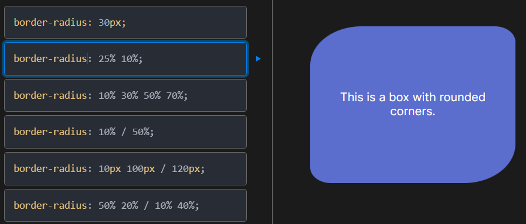

| Nombre del atributo |
Descripción |
Valores posibles |
Ejemplos de uso |
Imagen representativa |
Fuente |
| font-size |
Define el tamaño de la fuente del texto. |
Valores en px, em, rem, %, etc. |
p { font-size: 16px; }
h1 { font-size: 2em; } |
|
Enlace |
| border-radius |
Define el radio de las esquinas del elemento. |
Valores en px, %, etc. |
div { border-radius: 10px; } |
 |
Enlace |
| display |
Define cómo se debe mostrar un elemento. |
block, inline, flex, grid, etc. |
div { display: block; }
span { display: inline; } |
|
Enlace |
| flexbox (display: flex) |
Define un contenedor flexible. |
flex, inline-flex |
div { display: flex; } |
|
Enlace |
| position |
Define cómo se posiciona un elemento en el documento. |
static, relative, absolute, fixed, sticky |
div { position: absolute; } |
|
Enlace |
| box-shadow |
Aplica una sombra a un elemento. |
Valores en px, color, etc. |
div { box-shadow: 10px 10px 5px #888888; } |
|
Enlace |
| overflow |
Define qué hacer con el contenido desbordado de un elemento. |
visible, hidden, scroll, auto |
div { overflow: hidden; } |
|
Enlace |
| z-index |
Define el orden de apilamiento de los elementos posicionados. |
Valores numéricos |
div { z-index: 10; } |
|
Enlace |
| opacity |
Define la opacidad de un elemento. |
Valores entre 0 y 1 |
div { opacity: 0.5; } |
|
Enlace |
| margin |
Define el margen exterior de un elemento. |
Valores en px, %, auto, etc. |
div { margin: 20px; } |
|
Enlace |
| padding |
Define el relleno interior de un elemento. |
Valores en px, %, etc. |
div { padding: 20px; } |
|
Enlace |
| text-align |
Define la alineación horizontal del texto dentro de un elemento. |
left, right, center, justify |
p { text-align: center; } |
 |
Enlace |
| line-height |
Define la altura de la línea del texto. |
Valores en px, em, %, normal |
p { line-height: 1.5; } |
|
Enlace |
| border |
Define el estilo, ancho y color del borde de un elemento. |
Valores como solid, dashed, 1px, #000, etc. |
div { border: 1px solid #000; } |
|
Enlace |
| cursor |
Define el tipo de cursor que se muestra al pasar sobre un elemento. |
pointer, default, text, move, etc. |
a { cursor: pointer; } |
|
Enlace |